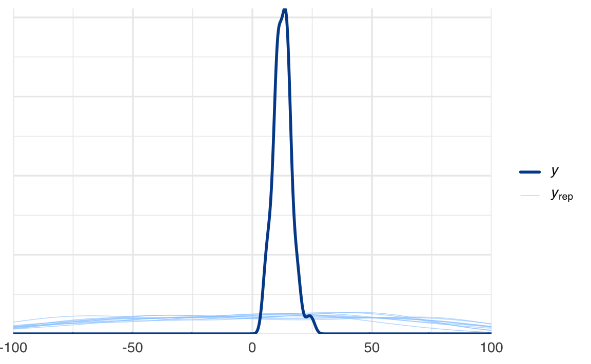
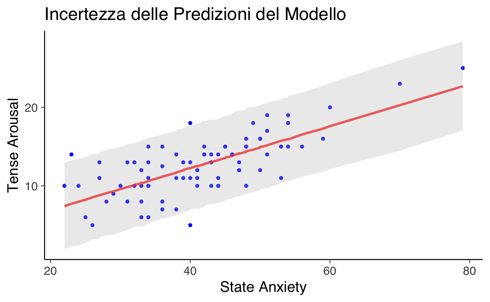
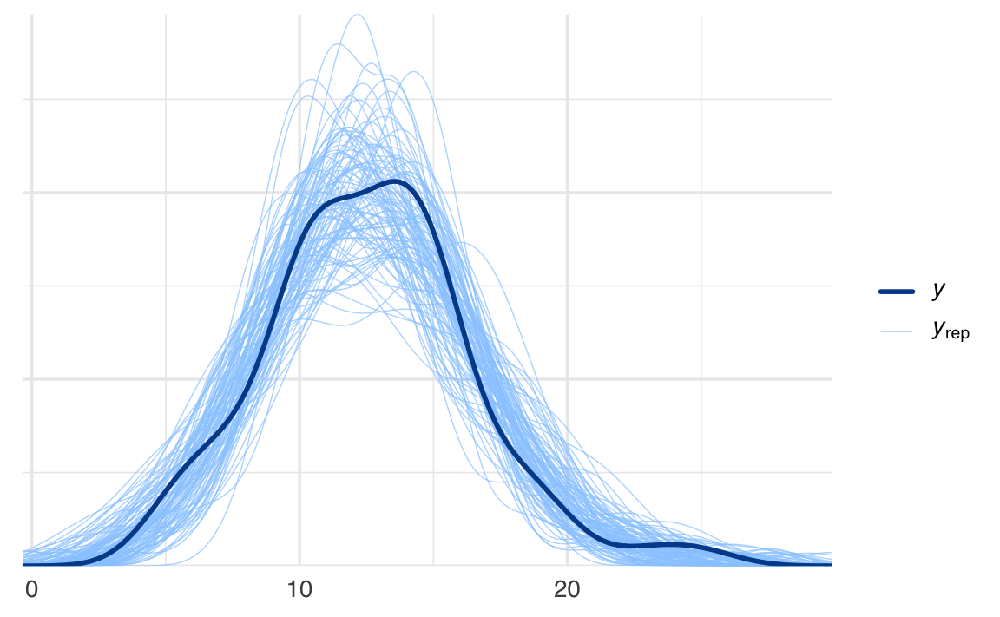

here::here("code", "_common.R") |>
source()
# Load packages
if (!requireNamespace("pacman")) install.packages("pacman")
pacman::p_load(brms, posterior)65 Predizione e inferenza
In questo capitolo imparerai a
- Eseguire e interpretare il Prior Predictive Check: Valutare l’adeguatezza delle distribuzioni a priori scelte per il modello di regressione, verificando che siano coerenti con la conoscenza preesistente e con i dati osservati.
- Eseguire e interpretare il Posterior Predictive Check: Valutare la capacità del modello di riprodurre i dati osservati dopo aver integrato le informazioni dai dati, confrontando le previsioni del modello con i dati reali.
- Calcolare e interpretare l’incertezza nella retta di regressione: Utilizzare le distribuzioni a posteriori dei parametri per quantificare l’incertezza nelle previsioni del modello, visualizzando intervalli di credibilità attorno alla retta di regressione.
- Comprendere l’approccio bayesiano alla regressione: Apprezzare come l’uso di distribuzioni a priori e a posteriori fornisca una visione più completa dell’incertezza rispetto ai metodi classici, migliorando la robustezza delle inferenze statistiche.
Prerequisiti
- Leggere Regression and Other Stories (Gelman et al., 2021). Prestare particolare attenzione al capitolo 9, “Prediction and Bayesian inference”, che offrono una guida dettagliata ai temi della predizione e dell’inferenza nel modello bayesiano di regressione lineare bivariata.
Preparazione del Notebook
65.1 Introduzione
Gelman et al. (2021) osservano che l’inferenza bayesiana si sviluppa in tre passaggi fondamentali, che vanno oltre la stima classica. In primo luogo, i dati e il modello vengono combinati per formare una distribuzione a posteriori, che solitamente viene riassunta tramite le distribuzioni a posteriori dei parametri del modello. In secondo luogo, è possibile propagare l’incertezza presente in questa distribuzione, ottenendo previsioni basate su simulazioni per risultati non osservati o futuri, tenendo conto dell’incertezza nei parametri del modello. Infine, è possibile integrare ulteriori informazioni nel modello utilizzando una distribuzione a priori. Questo capitolo si concentra sui temi della previsione e dell’inferenza, con particolare attenzione all’incertezza della retta di regressione e alle distribuzioni predittive.
65.2 Predizione
Per discutere i temi della predizione e dell’inferenza bayesiana nel contesto del modello bayesiano di regressione lineare bivariata, esamineremo nuovamente il set di dati relativo alla relazione tra Tense Arousal (TA1) e ansia di stato (state1).
65.3 Distribuzione Predittiva a Priori
Consideriamo il modello bayesiano di regressione lineare bivariata che include prior uniformi per i parametri \(\alpha\), \(\beta\) e \(\sigma\). Utilizzeremo il pacchetto brms per specificare e adattare il modello, concentrandoci in particolare sulla distribuzione predittiva a priori, ovvero sulle previsioni generate dal modello basandosi esclusivamente sulle distribuzioni a priori, senza considerare i dati osservati.
65.3.1 Specificazione del modello con prior predittivi
Per esaminare la distribuzione predittiva a priori, specifichiamo il modello impostando l’argomento sample_prior = "only". Questo ci permette di generare previsioni basate solo sui prior, ignorando i dati del campione.
# Prior predictive check con sample_prior = "only"
model_prior <- brm(
formula = TA1 ~ state1,
data = df,
prior = c(
prior(uniform(-50, 50), class = "Intercept"), # Prior per alpha
prior(uniform(-50, 50), class = "b"), # Prior per beta
prior(uniform(0, 50), class = "sigma") # Prior per sigma
),
sample_prior = "only", # Campiona solo dai prior
backend = "cmdstanr",
silent = 0
)65.3.2 Visualizzazione della distribuzione predittiva a priori
Utilizziamo la funzione pp_check per visualizzare la distribuzione predittiva a priori e confrontarla con i dati osservati. Questo passaggio è fondamentale per valutare se i prior scelti sono realistici e appropriati per il contesto del problema.
# Visualizzazione del prior predictive check
pp_check(model_prior) + xlim(-100, 100)
65.3.3 Interpretazione dei risultati
Dalla visualizzazione, notiamo che la distribuzione dei dati previsti dal modello, basata esclusivamente sui prior e sul modello generativo ipotizzato, è molto più ampia rispetto alla distribuzione dei dati effettivi. Questo suggerisce che i prior scelti sono troppo ampi e poco informativi. In altre parole, le previsioni generate dai prior coprono un intervallo di valori eccessivamente vasto, che non riflette adeguatamente la variabilità osservata nei dati reali.
65.3.3.1 Implicazioni
- Prior troppo ampi: Quando i prior sono troppo ampi, il modello genera previsioni che possono essere irrealistiche o eccessivamente disperse. Questo può portare a una scarsa capacità del modello di adattarsi ai dati osservati una volta che questi vengono incorporati.
- Prior informativi: Per migliorare il modello, potrebbe essere necessario utilizzare prior più informativi, che riflettano meglio la conoscenza preesistente sul fenomeno in studio. Ad esempio, limitare l’intervallo dei prior per \(\alpha\) e \(\beta\) o scegliere distribuzioni a priori più realistiche per \(\sigma\).
In sintesi, il prior predictive check è uno strumento essenziale per valutare l’adeguatezza delle distribuzioni a priori scelte. Attraverso questo controllo, possiamo identificare prior troppo ampi o inappropriati, che potrebbero compromettere la qualità delle inferenze bayesiane. Nel nostro caso, i risultati suggeriscono la necessità di rivedere i prior, adottando scelte più informative e coerenti con la realtà dei dati.
65.4 Modello di Regressione Lineare Bayesiana
In questa sezione, specifichiamo e adattiamo un modello di regressione lineare bivariata utilizzando prior uniformi per i parametri \(\alpha\) (intercetta), \(\beta\) (coefficiente angolare) e \(\sigma\) (deviazione standard). L’obiettivo è ottenere la distribuzione a posteriori dei parametri del modello e confrontare i risultati con quelli ottenuti tramite il metodo di massima verosimiglianza.
65.4.1 Specificazione del Modello con Prior Uniformi
Utilizziamo il pacchetto brms per specificare il modello di regressione lineare. I prior scelti sono uniformi e coprono un intervallo ampio per ciascun parametro, riflettendo un approccio inizialmente non informativo.
# Specificazione del modello con prior uniformi
model <- brm(
formula = TA1 ~ state1, # Formula del modello
data = df, # Dati
prior = c(
prior(uniform(-50, 50), class = "Intercept"), # Prior per alpha
prior(uniform(-50, 50), class = "b"), # Prior per beta
prior(uniform(0, 50), class = "sigma") # Prior per sigma
),
seed = 123, # Seme per la riproducibilità
chains = 4, # Numero di catene MCMC
iter = 4000, # Numero totale di iterazioni (2000 warmup, 2000 sampling)
warmup = 2000, # Iterazioni di warmup
backend = "cmdstanr", # Backend per l'ottimizzazione
silent = 0 # Mostra messaggi di avviso
)65.4.2 Esame delle Distribuzioni a Posteriori
Per esaminare le distribuzioni a posteriori dei parametri, utilizziamo la funzione summary. Questo ci permette di ottenere stime puntuali, intervalli di credibilità e altre statistiche rilevanti.
summary(model)
#> Family: gaussian
#> Links: mu = identity; sigma = identity
#> Formula: TA1 ~ state1
#> Data: df (Number of observations: 78)
#> Draws: 4 chains, each with iter = 4000; warmup = 2000; thin = 1;
#> total post-warmup draws = 8000
#>
#> Regression Coefficients:
#> Estimate Est.Error l-95% CI u-95% CI Rhat Bulk_ESS Tail_ESS
#> Intercept 1.57 1.28 -1.01 4.07 1.00 8973 5508
#> state1 0.27 0.03 0.21 0.33 1.00 8503 4886
#>
#> Further Distributional Parameters:
#> Estimate Est.Error l-95% CI u-95% CI Rhat Bulk_ESS Tail_ESS
#> sigma 2.72 0.23 2.31 3.20 1.00 8001 6020
#>
#> Draws were sampled using sample(hmc). For each parameter, Bulk_ESS
#> and Tail_ESS are effective sample size measures, and Rhat is the potential
#> scale reduction factor on split chains (at convergence, Rhat = 1).Un aspetto cruciale è che la distribuzione a posteriori non fornisce solo informazioni sui singoli parametri, ma anche sulle loro interdipendenze. Queste relazioni sono riflesse nei campioni a posteriori, che possono essere ulteriormente analizzati e trasformati.
65.4.3 Confronto con il Metodo di Massima Verosimiglianza
Per confrontare i risultati bayesiani con quelli classici, stimiamo il modello di regressione lineare utilizzando il metodo di massima verosimiglianza.
summary(lm(TA1 ~ state1, data = df))
#>
#> Call:
#> lm(formula = TA1 ~ state1, data = df)
#>
#> Residuals:
#> Min 1Q Median 3Q Max
#> -7.238 -1.754 0.159 1.973 6.302
#>
#> Coefficients:
#> Estimate Std. Error t value Pr(>|t|)
#> (Intercept) 1.5555 1.2485 1.25 0.22
#> state1 0.2671 0.0292 9.14 7.3e-14
#>
#> Residual standard error: 2.67 on 76 degrees of freedom
#> Multiple R-squared: 0.523, Adjusted R-squared: 0.517
#> F-statistic: 83.5 on 1 and 76 DF, p-value: 7.35e-14Nel caso di prior uniformi, la soluzione bayesiana coincide con quella di massima verosimiglianza. Questo risultato è atteso, poiché prior non informativi portano a distribuzioni a posteriori dominate dai dati osservati.
65.5 Predizione a Posteriori
Una volta ottenuta la distribuzione a posteriori dei parametri, possiamo utilizzarla per fare previsioni. In particolare, siamo interessati a due scenari: 1. Predizione per un valore specifico del predittore. 2. Quantificazione dell’incertezza nelle previsioni per tutti i valori osservati del predittore.
65.5.1 Predizione a Posteriori per un Valore Specifico
Per ottenere la distribuzione a posteriori della predizione per un valore specifico del predittore (ad esempio, state1 = 30), utilizziamo la funzione posterior_predict.
# Predizione a posteriori per ansia di stato pari a 30
new_data <- data.frame(state1 = 30)
post_pred <- posterior_predict(model, newdata = new_data)
# Esame della distribuzione a posteriori della predizione
summary(post_pred)
#> V1
#> Min. :-2.43
#> 1st Qu.: 7.67
#> Median : 9.55
#> Mean : 9.56
#> 3rd Qu.:11.45
#> Max. :19.11Questo ci fornisce una distribuzione di valori predetti per TA1 quando state1 = 30, riflettendo l’incertezza associata ai parametri del modello.
65.5.2 Quantificazione dell’Incertezza nelle Predizioni
Per quantificare l’incertezza complessiva nelle previsioni del modello, calcoliamo la distribuzione a posteriori delle predizioni per tutti i valori osservati di \(x\). Questo ci permette di ottenere stime puntuali e intervalli di credibilità.
# Predizione a posteriori per tutti i valori di x
post_pred_all <- posterior_predict(model)65.5.3 Visualizzazione dell’Incertezza delle Predizioni
Visualizziamo l’incertezza delle predizioni utilizzando un grafico che mostra la linea di regressione media e gli intervalli di credibilità al 95%.
# Creazione del data frame per ggplot
plot_data <- data.frame(
state1 = df$state1,
TA1 = df$TA1,
pred_mean = colMeans(post_pred_all), # Media delle predizioni
pred_lower = apply(post_pred_all, 2, quantile, 0.025), # Limite inferiore
pred_upper = apply(post_pred_all, 2, quantile, 0.975) # Limite superiore
)
# Costruzione del grafico
ggplot(plot_data, aes(x = state1, y = TA1)) +
geom_point(color = "blue", size = 1) + # Punti osservati
geom_line(aes(y = pred_mean), color = "red", size = 1, alpha = 0.8) + # Linea di regressione
geom_ribbon(
aes(ymin = pred_lower, ymax = pred_upper), fill = "gray", alpha = 0.3) +
# Intervalli di credibilità
labs(
title = "Incertezza delle Predizioni del Modello",
x = "State Anxiety",
y = "Tense Arousal"
)
65.6 Interpretazione dei Risultati
65.6.1 Significato della Predizione a Posteriori
Il comando posterior_predict(model) genera una matrice in cui:
- Ogni riga rappresenta un campione della distribuzione a posteriori.
- Ogni colonna rappresenta una predizione per un valore specifico di \(x\).
Questa matrice ci permette di:
- Visualizzare l’incertezza: Gli intervalli di credibilità riflettono l’incertezza associata alle previsioni.
- Valutare la bontà del modello: Confrontando le predizioni con i dati osservati, possiamo verificare se il modello è adeguato.
- Fare previsioni robuste: Generiamo previsioni per nuovi dati, tenendo conto dell’incertezza nei parametri.
65.6.2 Esempio di Interpretazione
Supponiamo che per state1 = 30, la media delle predizioni a posteriori sia 50, con un intervallo di credibilità al 95% compreso tra 45 e 55. Questo significa che, dato il modello e i dati, c’è una probabilità del 95% che il valore vero di TA1 per state1 = 30 sia compreso tra 45 e 55. L’ampiezza dell’intervallo riflette l’incertezza associata alla predizione.
65.6.3 Confronto con l’Approccio Classico
Nell’approccio classico (frequentista), le predizioni sono accompagnate da intervalli di confidenza, che riflettono solo l’incertezza nella stima dei parametri. Al contrario, l’approccio bayesiano include sia l’incertezza nei parametri sia la variabilità residua, fornendo una visione più completa dell’incertezza predittiva.
65.7 Distribuzione Predittiva a Posteriori
Il Posterior Predictive Check (PPC) è uno strumento fondamentale nella modellazione bayesiana, utilizzato per valutare la bontà di adattamento del modello ai dati osservati. Questo controllo consiste nel confrontare i dati predetti dal modello (basati sulla distribuzione a posteriori dei parametri) con i dati effettivamente osservati. Se il modello è adeguato, le previsioni generate dovrebbero essere coerenti con i dati reali.
65.7.1 Esecuzione del Posterior Predictive Check
Per eseguire un PPC, utilizziamo la funzione pp_check del pacchetto brms. Questa funzione genera un insieme di previsioni basate sulla distribuzione a posteriori e le confronta visivamente con i dati osservati.
pp_check(model, ndraws = 100)
65.7.2 Interpretazione dei Risultati
Dall’output del PPC, notiamo che i dati predetti dal modello sono simili ai dati osservati nel campione. Questa corrispondenza suggerisce che il modello ipotizzato è in grado di riprodurre adeguatamente le caratteristiche principali dei dati. In altre parole, il modello sembra essere appropriato per descrivere la relazione tra le variabili analizzate.
65.7.2.1 Cosa Significa “Simili”?
- Coerenza nella forma: La distribuzione dei dati predetti ha una forma simile a quella dei dati osservati, indicando che il modello cattura correttamente la struttura sottostante dei dati.
- Variabilità: La variabilità delle previsioni è in linea con quella dei dati osservati, suggerendo che il modello tiene conto adeguatamente dell’incertezza intrinseca nei dati.
- Assenza di discrepanze evidenti: Non ci sono differenze sistematiche tra le previsioni e i dati osservati, il che supporta l’ipotesi che il modello sia ben specificato.
65.7.3 Importanza del PPC
Il PPC è un passaggio cruciale perché:
- Valuta l’adattamento del modello: Fornisce una verifica visiva e quantitativa della capacità del modello di riprodurre i dati osservati.
- Identifica potenziali problemi: Se le previsioni non corrispondono ai dati osservati, ciò può indicare che il modello è mal specificato o che mancano componenti importanti.
- Supporta la validità del modello: Un buon adattamento tra previsioni e dati osservati aumenta la fiducia nelle inferenze e nelle previsioni del modello.
In sintesi, nel nostro caso, la somiglianza tra i dati predetti e quelli osservati è un’indicazione positiva che il modello di regressione lineare bivariata, con i prior uniformi specificati, è adeguato per descrivere la relazione tra state1 e TA1. Tuttavia, è sempre consigliabile eseguire ulteriori controlli e verifiche, come l’analisi dei residui o l’uso di metriche quantitative (ad esempio, il Bayesian R-squared), per confermare ulteriormente la bontà del modello.
65.8 Riflessioni Conclusive
In questo capitolo, abbiamo approfondito i temi della predizione bayesiana nel contesto del modello di regressione bivariato, evidenziando l’importanza delle verifiche predittive a priori e a posteriori per la valutazione e la validazione del modello.
Abbiamo visto come il Prior Predictive Check sia essenziale per verificare che le distribuzioni a priori siano appropriate per il modello e i dati del campione. Questo passaggio consente di esaminare se le ipotesi iniziali sono coerenti con la conoscenza preesistente e con i risultati attesi. Un’adeguata verifica predittiva a priori aiuta a prevenire l’adozione di distribuzioni a priori che possano portare a previsioni irrealistiche o fuorvianti.
Successivamente, abbiamo esaminato il Posterior Predictive Check come strumento per valutare la capacità del modello di adattarsi ai dati osservati. Dopo aver integrato le informazioni dei dati con le distribuzioni a priori, il posterior predictive check permette di confrontare le predizioni del modello con i dati effettivamente osservati. Se il modello è adeguato, le sue predizioni dovrebbero essere in linea con i dati reali.
Inoltre, abbiamo discusso l’incertezza della retta di regressione, mostrando come le distribuzioni a posteriori dei parametri possano essere utilizzate per quantificare l’incertezza nelle previsioni. Attraverso la visualizzazione degli intervalli di credibilità, abbiamo evidenziato come l’approccio bayesiano fornisca una misura più completa dell’incertezza rispetto ai metodi classici.
In conclusione, l’approccio bayesiano alla predizione e alla verifica dei modelli offre un framework robusto e flessibile per l’analisi statistica. I prior e posterior predictive checks non sono semplici passaggi tecnici, ma costituiscono una parte integrante del processo di modellizzazione, assicurando che il modello non solo sia ben adattato ai dati, ma anche che le sue assunzioni siano giustificate e realistiche. L’utilizzo di questi strumenti permette di costruire modelli che siano coerenti con la realtà che intendono rappresentare.
Informazioni sull’Ambiente di Sviluppo
sessionInfo()
#> R version 4.4.2 (2024-10-31)
#> Platform: aarch64-apple-darwin20
#> Running under: macOS Sequoia 15.3.1
#>
#> Matrix products: default
#> BLAS: /Library/Frameworks/R.framework/Versions/4.4-arm64/Resources/lib/libRblas.0.dylib
#> LAPACK: /Library/Frameworks/R.framework/Versions/4.4-arm64/Resources/lib/libRlapack.dylib; LAPACK version 3.12.0
#>
#> locale:
#> [1] C/UTF-8/C/C/C/C
#>
#> time zone: Europe/Rome
#> tzcode source: internal
#>
#> attached base packages:
#> [1] stats graphics grDevices utils datasets methods base
#>
#> other attached packages:
#> [1] rstan_2.32.6 StanHeaders_2.32.10 posterior_1.6.1
#> [4] brms_2.22.0 Rcpp_1.0.14 thematic_0.1.6
#> [7] MetBrewer_0.2.0 ggokabeito_0.1.0 see_0.10.0
#> [10] gridExtra_2.3 patchwork_1.3.0 bayesplot_1.11.1
#> [13] psych_2.4.12 scales_1.3.0 markdown_1.13
#> [16] knitr_1.49 lubridate_1.9.4 forcats_1.0.0
#> [19] stringr_1.5.1 dplyr_1.1.4 purrr_1.0.4
#> [22] readr_2.1.5 tidyr_1.3.1 tibble_3.2.1
#> [25] ggplot2_3.5.1 tidyverse_2.0.0 rio_1.2.3
#> [28] here_1.0.1
#>
#> loaded via a namespace (and not attached):
#> [1] tidyselect_1.2.1 farver_2.1.2 R.utils_2.13.0
#> [4] loo_2.8.0 fastmap_1.2.0 TH.data_1.1-3
#> [7] tensorA_0.36.2.1 pacman_0.5.1 digest_0.6.37
#> [10] timechange_0.3.0 estimability_1.5.1 lifecycle_1.0.4
#> [13] processx_3.8.6 survival_3.8-3 magrittr_2.0.3
#> [16] compiler_4.4.2 rlang_1.1.5 tools_4.4.2
#> [19] yaml_2.3.10 data.table_1.17.0 labeling_0.4.3
#> [22] bridgesampling_1.1-2 htmlwidgets_1.6.4 curl_6.2.1
#> [25] pkgbuild_1.4.6 mnormt_2.1.1 plyr_1.8.9
#> [28] cmdstanr_0.8.1 abind_1.4-8 multcomp_1.4-28
#> [31] withr_3.0.2 R.oo_1.27.0 stats4_4.4.2
#> [34] grid_4.4.2 inline_0.3.21 xtable_1.8-4
#> [37] colorspace_2.1-1 emmeans_1.10.7 MASS_7.3-65
#> [40] cli_3.6.4 mvtnorm_1.3-3 rmarkdown_2.29
#> [43] generics_0.1.3 RcppParallel_5.1.10 rstudioapi_0.17.1
#> [46] reshape2_1.4.4 tzdb_0.4.0 splines_4.4.2
#> [49] parallel_4.4.2 matrixStats_1.5.0 vctrs_0.6.5
#> [52] V8_6.0.1 Matrix_1.7-2 sandwich_3.1-1
#> [55] jsonlite_1.9.1 hms_1.1.3 glue_1.8.0
#> [58] ps_1.9.0 codetools_0.2-20 distributional_0.5.0
#> [61] stringi_1.8.4 gtable_0.3.6 QuickJSR_1.6.0
#> [64] munsell_0.5.1 pillar_1.10.1 htmltools_0.5.8.1
#> [67] Brobdingnag_1.2-9 R6_2.6.1 rprojroot_2.0.4
#> [70] evaluate_1.0.3 lattice_0.22-6 R.methodsS3_1.8.2
#> [73] backports_1.5.0 rstantools_2.4.0 coda_0.19-4.1
#> [76] nlme_3.1-167 checkmate_2.3.2 xfun_0.51
#> [79] zoo_1.8-13 pkgconfig_2.0.3Bibliografia
Gelman, A., Hill, J., & Vehtari, A. (2021). Regression and other stories. Cambridge University Press.